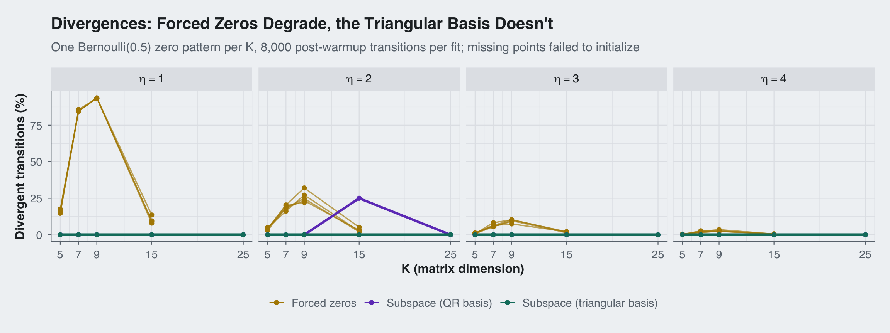
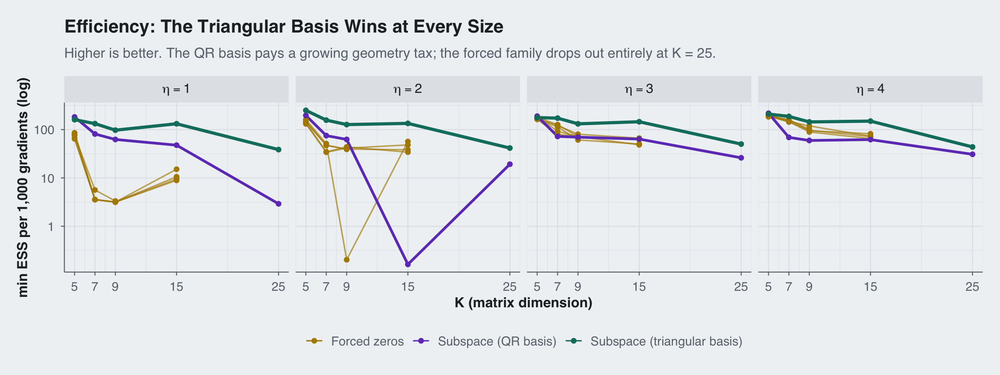

Structural Zeros in Correlation Matrices: A Twelve-Parameterization Bake-Off
stan
correlation
parameterizations
Author
Sean Pinkney
Published
July 15, 2026
1. The Problem with Zeros in Correlation Matrices
Sometimes you know, before seeing any data, that certain correlations are exactly zero. A graphical model tells you two variables are conditionally unrelated, a confirmatory factor structure forbids a cross-loading, a physical system rules out a coupling. The prior you want is “LKJ (Lewandowski et al. 2009), restricted to the matrices that respect my zeros.”
You cannot get there by sampling from the LKJ and zeroing out cells, as the result is generally not positive definite. The zeros have to be built into the parameterization itself, and how you build them in turns out to matter a great deal for the sampler. In this post I race twelve Stan (Carpenter et al. 2017) parameterizations of the same target posterior against each other. Since all twelve provably target the same distribution (and I verify this numerically), the comparison isolates exactly one thing: sampling geometry. Divergences, effective sample size, and cost per gradient evaluation.
The punchline: the two families of solutions make opposite trade-offs, and a hybrid, an exact-constraint construction with a canonical triangular basis, refuses to trade at all. Zero divergences in every run, the best ESS per gradient in the field, and the fastest wall clock.
2. Family 1: Forced Zeros
Family 1 is the constrained-Cholesky approach I introduced in Pinkney (2024a) and presented at StanCon (Pinkney 2024b). The original method is more general than zeros: it walks the Cholesky factor row by row and lets you pin any cell to a known value or restrict it to a bounded range. Writing \(\Omega = L L'\) with unit-norm rows of \(L\), the correlation in cell \((i,j)\) is \[
\Omega_{ij} = b_1 + L_{ij} L_{jj}, \qquad
b_1 = \sum_{k<j} L_{ik} L_{jk},
\] which is affine in \(L_{ij}\), so a known value — here zero — pins \(L_{ij} = -b_1 / L_{jj}\) and consumes no parameter, while a bound on \(\Omega_{ij}\) becomes a bound on \(L_{ij}\). Conditioning the LKJ distribution on \(\Omega_{ij} = 0\), a delta function in \(\Omega\) coordinates, contributes a density correction of \(-\log L_{jj}\) per zero. The carpenter variant below is Bob Carpenter’s compact formulation of the zeros-only case, from a recent Stan Discourse exchange about exactly this problem:
canonical partial correlations, \(L_{ij} = r \tanh(x)\)
They all share one flaw. The forced value \(-b_1/L_{jj}\) does not know about the row’s remaining stick, \(\sqrt{1 - \sum_{k<j} L_{ik}^2}\), and nothing stops it from overshooting. When it does, a downstream sqrt goes negative, the log density is NaN, and the sampler is suddenly fighting a hard boundary it cannot see coming. Every member of this family runs at roughly a 1% divergence rate on the benchmarks below. That is a bias risk you manage with adapt_delta forever, on every model you ever build with these blocks.
Before moving on, a measurement lesson that the LDL trio taught me for free. The three variants define identical densities and differ only in floating-point arithmetic, yet their divergence totals across five patterns span 356 to 466. That spread is a direct read on the noise floor of single-fit divergence counts, and it is wider than most gaps between genuinely different parameterizations. Beware of divergence league tables built from single runs.
3. Family 2: Exact-Constraint Subspaces
The second idea eliminates the boundary instead of policing it. I learned it from Seth Axen, in a Turing.jl discussion on positive definite matrices with structural zeros (Axen 2023):
For each column j, each column i for i < j that is orthogonal to column j decreases the dimensionality of the hemisphere by 1. So we simply construct a point on a lower dimensional hemisphere and use the QR decomposition of the orthogonal columns to lift it to a higher dimensional hemisphere.
Row \(i\) of a correlation Cholesky factor is a unit vector with a positive last coordinate. Because row \(j\) is zero beyond column \(j\), the constraint \(\Omega_{ij} = 0\) says row \(i\) is orthogonal to row\(j\)as a whole vector. A row with \(n_z\) zeros therefore lives on a unit hemisphere inside the orthogonal complement of its zero-partner rows, a sphere of dimension \(d = i - 1 - n_z\). Sample there and the constraint holds by construction. No proposal can ever be infeasible, so the divergence mechanism of Family 1 simply does not exist. The joint delta over a row’s zeros contributes \(-\tfrac{1}{2}\log\det(A'A)\), where the columns of \(A\) are the zero-partner rows. This is Axen’s “divide by the determinant of the R factor.”
My first two implementations (qr, qr2) followed the recipe literally: Householder QR of \(A\), complement basis from the trailing columns of the full \(Q\), hemisphere chart via a gnomonic map or \(\tanh\) sticks. They achieved exactly zero divergences, and about 40% of the ESS of the forced-zero family. Swapping the chart did nothing, which was the tell. The problem is the basis: Householder’s complement columns are an arbitrary orthonormal frame that spins as the earlier rows move, so the raw coordinates keep changing meaning underneath the sampler.
4. A Canonical Triangular Basis
The fix is to anchor the basis to the matrix entries. For each free column \(k\) of row \(i\), take \(e_k\) and fill in the row’s forced columns by back-substitution through the zero constraints. This is exactly the Family 1 forced-entry fill, applied to basis vectors instead of the sampled row. Collect these as the columns of \(T\). Splitting coordinates into forced (\(Z\)) and free (\(F\)) sets gives \(T_F = I\) and \(T_Z = -(A_Z')^{-1} A_F'\), and orthonormalization costs one small Cholesky factor \(S = \operatorname{chol}(T'T)\): the map \(v = T (S')^{-1} z\) satisfies \(\lVert v \rVert = \lVert z \rVert\), so the sphere-measure bookkeeping goes through untouched.
Two identities then make the whole thing almost embarrassingly cheap.
The delta term factors. The zero-partner rows have triangular support, so \(A_Z\) is triangular with the partners’ diagonals on its diagonal, and Sylvester’s determinant identity gives \[
\det(A'A) = \Big(\prod_{j \in Z} L_{jj}\Big)^{2} \det(T'T).
\] The conditioning term \(-\tfrac{1}{2}\log\det(A'A)\) splits into the familiar Family 1 correction \(-\sum_j \log L_{jj}\), which now falls out analytically with no linear algebra at all, plus \(-\sum_k \log S_{kk}\), which rides along free with the orthonormalization Cholesky. I find it satisfying that the correction I originally derived as a hand-computed Jacobian in the forced-value construction reappears here as the determinant of the triangular block of a Gram factorization.
The Gram is small. Since \(T_F = I\), we have \(T'T = I + W'W\) where \(W\) holds only the \(n_z\) forced-coordinate rows, so the crossprod works on length-\(n_z\) vectors rather than length-\((i-1)\) ones.
Per constrained row, the entire construction is one \(d \times d\)cholesky_decompose and some small matrix-vector products. No QR anywhere. I call this model tri; the full Stan code is in the appendix.
I also tried a “donut” variant, one extra parameter per row, normalizing a free vector instead of using a compact chart. It kept the exact-constraint geometry but the \(|u_{\text{last}}|\) fold puts a power-law barrier at the equator, and it diverged worse than anything else in the field. Not every overparameterization trick transfers.
5. The Bake-Off at K = 7
Setup: \(K = 7\), \(\eta = 4\), prior-only, five random zero patterns with roughly half of the 21 lower-triangular cells zeroed, 4 chains \(\times\) 2000 draws after 1000 warmup, default adapt_delta = 0.8. Correctness was checked on a held-out pattern first: all twelve posteriors match the carpenter baseline within Monte Carlo error, and the constrained cells come back as numerically exact zeros (\(\sim 10^{-19}\)).
Divergences out of 8,000 post-warmup transitions:
pattern
carpenter
pinkney
ldl
ldl2
cvine
rowscale
ldl3
schur
qr
qr2
tri
donut
seed 1
34
53
53
26
41
44
40
40
0
0
0
522
seed 2
61
65
74
107
64
78
104
60
0
0
0
551
seed 3
77
44
67
57
69
44
68
59
0
0
0
500
seed 4
137
157
130
112
186
155
152
123
0
0
0
418
seed 5
110
94
114
54
141
114
102
29
0
0
0
540
total
419
413
438
356
501
435
466
311
0
0
0
2531
Min bulk ESS over the free cells of \(\Omega\) (8,000 draws):
pattern
carpenter
pinkney
ldl
ldl2
cvine
rowscale
ldl3
schur
qr
qr2
tri
donut
seed 1
11639
10566
9979
10618
10219
11319
9840
11036
3995
3362
11430
4321
seed 2
10817
9866
10826
9772
10188
10153
10361
10040
4049
3728
11427
5049
seed 3
9344
11014
10244
10314
10946
9420
10625
10787
4334
4304
9574
3795
seed 4
8395
9159
8326
9257
8771
9463
8266
9458
3701
3815
9582
5121
seed 5
10381
10010
9268
8760
10301
9218
9896
4770
4267
4153
11284
4454
median
10381
10010
9979
9772
10219
9463
9896
10040
4049
3815
11284
4454
Efficiency (medians over the five patterns):
carpenter
pinkney
ldl
ldl2
cvine
rowscale
ldl3
schur
qr
qr2
tri
donut
min ESS / 1000 gradients
188.5
179.6
185.9
182.2
188.9
176.3
182.1
182.0
75.0
72.5
207.3
18.7
total wall clock, 5 fits (s)
4.53
4.10
4.40
4.51
5.14
4.21
4.51
4.15
2.07
2.06
1.95
9.72
The tri column is the whole story: zero divergences on every pattern, the highest median ESS in the table, the best ESS per gradient, and the lowest wall clock. The subspace geometry means there is no boundary to fight, and the anchored basis means the sampler is not chasing a spinning frame. The usual robustness-versus-speed trade dissolves.
6. Does It Hold Up? Scaling K and \(\eta\)
A single \((K, \eta)\) corner is not a benchmark, so I reran a representative subset over \(K \in \{5, 7, 9, 15, 25\}\) and \(\eta \in \{1, 2, 3, 4\}\): six forced-zero models, the literal QR implementation qr2, and tri. One Bernoulli(0.5) zero pattern per \(K\) (realized: 6 of 10 cells at \(K=5\) up to 143 of 300 at \(K=25\)), shared across \(\eta\), same sampler settings as before. One fit per configuration, so the single-fit noise caveat from Section 2 applies to small gaps; the patterns below are not small.
ggplot(sweep |>filter(!failed),aes(x = K, y = div_pct, group = model, color = family)) +geom_line(aes(linewidth = family, alpha = family)) +geom_point(size =1.6) +facet_wrap(~eta_lab, nrow =1, labeller = label_parsed) +scale_color_manual(values = fam_colors, name =NULL) +scale_linewidth_manual(values =c(0.6, 1.1, 1.3), guide ="none") +scale_alpha_manual(values =c(0.65, 1, 1), guide ="none") +scale_x_continuous(breaks =c(5, 7, 9, 15, 25)) +theme_blog() +labs(x ="K (matrix dimension)",y ="Divergent transitions (%)",title ="Divergences: Forced Zeros Degrade, the Triangular Basis Doesn't",subtitle ="One Bernoulli(0.5) zero pattern per K, 8,000 post-warmup transitions per fit; missing points failed to initialize" ) +theme(legend.position ="bottom")

Figure 1: Divergence rate by matrix dimension and LKJ concentration. Each thin gold line is one forced-zero parameterization; lines that stop mid-panel are models that failed to initialize at the next K. The teal line (tri) is exactly zero in every panel. The purple spike is qr2’s catastrophic run at K = 15, eta = 2: one chain stuck at 100% divergence.
Code
ggplot(sweep |>filter(!failed),aes(x = K, y = ess_per_1k_grad, group = model, color = family)) +geom_line(aes(linewidth = family, alpha = family)) +geom_point(size =1.6) +facet_wrap(~eta_lab, nrow =1, labeller = label_parsed) +scale_color_manual(values = fam_colors, name =NULL) +scale_linewidth_manual(values =c(0.6, 1.1, 1.3), guide ="none") +scale_alpha_manual(values =c(0.65, 1, 1), guide ="none") +scale_x_continuous(breaks =c(5, 7, 9, 15, 25)) +scale_y_log10() +theme_blog() +labs(x ="K (matrix dimension)",y ="min ESS per 1,000 gradients (log)",title ="Efficiency: The Triangular Basis Wins at Every Size",subtitle ="Higher is better. The QR basis pays a growing geometry tax; the forced family drops out entirely at K = 25." ) +theme(legend.position ="bottom")

Figure 2: Sampling efficiency (min bulk ESS over free correlations per 1,000 gradient evaluations, log scale) by dimension and concentration.
Outright failures: initialization could not find a feasible point after 100 attempts per chain.
model
K = 25
K = 15
K = 7
K = 9
carpenter
4 of 4 etas
—
—
—
cvine
4 of 4 etas
4 of 4 etas
—
—
ldl2
4 of 4 etas
—
—
—
ldl3
4 of 4 etas
—
—
—
pinkney
4 of 4 etas
—
—
—
schur
4 of 4 etas
4 of 4 etas
4 of 4 etas
4 of 4 etas
Three things jump out.
The divergence tax explodes exactly where you would want to use this prior. At \(\eta = 1\), the uniform LKJ, the forced-zero family runs 13–17% divergent at \(K = 5\), and by \(K = 7\)–\(9\) it is at 85–94%: five of every six transitions divergent. That is not a tuning problem; that is the uniform prior putting real mass right where the forced values overshoot the stick. (A fun artifact visible in the \(\eta = 1\) panel: four of the gold lines coincide exactly. With the seed fixed, carpenter, pinkney, ldl2, and ldl3 are literally the same density in raw coordinates — the correlation-scale bounds never bind, by Cauchy–Schwarz — so their chains agree bit-for-bit until floating-point chaos separates them. The distinct-looking K = 7 table entries in Section 5 are that chaos, not different geometry.)
Initialization failure is the same boundary, expressed terminally.schur cannot find a feasible starting point in 100 attempts per chain for this sweep’s patterns from \(K = 7\) up (it ran fine on all five Section 5 patterns at the same size; feasible initialization is pattern-dependent luck). cvine joins it at \(K = 15\). At \(K = 25\), with 143 forced cells, none of the six forced models can start at any \(\eta\). This is the scaling fact that matters: the feasible set the forced construction must hit by chance gets exponentially thin as the pattern grows, and adapt_delta cannot rescue a model that never takes its first draw. The subspace models are immune by construction, since every point of their parameter space is feasible.
Anchoring the basis is not a nicety. The literal QR implementation survives everywhere the forced family dies, but it pays for the spinning frame: at \(K = 25\), \(\eta = 1\) it needed 852 seconds against tri’s 6.8, and at \(K = 15\), \(\eta = 2\) it failed catastrophically, one chain pinned at 100% divergence and a min ESS of 7. (The forced family has its own catastrophic mode: ldl3 at \(K = 9\), \(\eta = 2\) came back with a min ESS of 19.) Interestingly, qr2’s raw min ESS at \(K = 25\) is higher than tri’s — about 3,900 vs 1,200 of 8,000 draws — but it burns 6–100\(\times\) the gradient evaluations to get it. Per gradient, and per second, tri wins every configuration in the sweep: zero divergences in all twenty, flat wall clock, and the best efficiency in the field.
7. When to Use Which
Scenario
Recommendation
Any new model with structural zeros
tri: exact constraints, no divergence tax, no efficiency tax
Small \(K\), sparse zeros, existing forced-zero code, deadlines
Family 1 is fine with adapt_delta raised and divergences monitored
\(K \gtrsim 15\) with dense zero patterns
Family 1 may not even initialize; tri is the only option here that is both feasible and efficient
Huge \(K\)
tri, but profile the per-row cholesky_decompose; the \(d \times d\) factorizations are small but not free
Zeros plus bounds on the free correlations
Family 1 machinery composes naturally with bounded transforms (Pinkney 2024a, 2024b); porting bounds into the subspace view is open
8. Discussion
The key insight is geometric: a constraint you enforce is a boundary; a constraint you parameterize away is not there at all. The forced-zero family enforces, and pays on a sliding scale: a persistent divergence rate at small \(K\), collapsing ESS at moderate \(K\), and outright initialization failure once the pattern is dense enough that random starting points can never satisfy every forced cell at once. Axen’s subspace construction (Axen 2023) parameterizes away, and the only thing it was missing was a basis that respects the triangular structure of the problem. Once the complement basis is anchored to the matrix entries, the geometry cost vanishes and the exact method is simultaneously the safest, the most efficient per gradient, and the fastest on the wall clock.
The measurement lesson is worth repeating too. Identical densities implemented with different arithmetic produced divergence counts spanning a 30% range across five patterns. Single-fit divergence comparisons between parameterizations are mostly noise unless the gap is qualitative, like several hundred versus exactly zero.
Two threads are left open. Bounded correlations plus zeros in the subspace view would need the feasible region of a row intersected with a box, which no longer factors as a sphere. And the per-row Cholesky factorizations, while small, deserve profiling at \(K\) in the hundreds. Both feel tractable.
Acknowledgments
The exact-constraint subspace idea, zeros as orthogonality constraints with the sample lifted from a lower-dimensional hemisphere through the orthogonal complement, including the \(\det R\) Jacobian factor, is due to Seth Axen (Axen 2023). The tri model is that idea with a canonical triangular choice of complement basis and the determinant factored analytically. Thanks to Bob Carpenter for the compact zeros-only formulation benchmarked here as carpenter, and for the Discourse conversation that prompted this bake-off. The C-vine construction rests on the vine and partial-correlation results of Joe (2006) and Lewandowski et al. (2009).
Appendix: Stan Code for tri
unitvec-tri-corr-zeros.stan
functions {matrixcholesky_corr_constrain_tri_jacobian(int K, vector raw,array[,] int zeros) {// Exact-constraint subspace geometry but with a canonical// triangular basis instead of Householder QR: basis vector k is a unit// at free column k with the row's forced columns filled in by// back-substitution through the zero constraints, then orthonormalized// by the Cholesky factor of its small Gram matrix. The basis is// anchored to matrix entries and varies smoothly with earlier rows.matrix[K, K] L =rep_matrix(0, K, K);int raw_idx =1;int zero_idx =1; L[1, 1] =1;for (i in2:K) {int n_z =0;while (zero_idx + n_z <=size(zeros)&& zeros[zero_idx + n_z, 1] == i) { n_z +=1; }int d = i -1- n_z;// subsphere coordinates via tanh sticks (cosh-form jacobian)vector[d] z;real r =1;for (k in1:d) {real x = raw[raw_idx];real cosh_x =cosh(x); z[k] = r *tanh(x);jacobian+=-(d - k +2) *log(cosh_x); r /= cosh_x; raw_idx +=1; }if (n_z ==0) {if (d >0) { L[i, 1:d] = z'; } L[i, i] = r; } else {array[n_z] int zc;for (m in1:n_z) { zc[m] = zeros[zero_idx + m -1, 2]; }// the joint-delta term -0.5 * log det(Gram of zero-partner rows)// factors: splitting the partner matrix A by forced/free coords,// A_Z is triangular with the partners' diagonals, and by Sylvester// det(A'A) = prod(L[j,j])^2 * det(T'T)for (m in1:n_z) {jacobian+=-log(L[zc[m], zc[m]]); }if (d >0) {array[d] int free_cols; {int fc =0;int zp =1;for (c in1:(i -1)) {if (zp <= n_z && zc[zp] == c) { zp +=1; } else { fc +=1; free_cols[fc] = c; } } }// triangular basis: unit at each free column, forced columns// filled by back-substitution so every column is orthogonal to// the zero-partner rowsmatrix[i -1, d] T =rep_matrix(0, i -1, d);for (k in1:d) {intcol= free_cols[k]; T[col, k] =1;for (m in1:n_z) {int j = zc[m];if (j >col) { T[j, k] =-dot_product(L[j, 1:(j -1)], T[1:(j -1), k])/ L[j, j]; } } }// T's free-column rows are the identity, so T'T = I + W'W with// W the forced-column rows onlymatrix[n_z, d] W;for (m in1:n_z) { W[m, ] = T[zc[m], ]; }// orthonormalize: v = T * S'^{-1} * z has ||v|| = ||z||;// diagonal(S) doubles as the det(T'T) half of the delta termmatrix[d, d] S =cholesky_decompose(add_diag(crossprod(W), 1.0));jacobian+=-sum(log(diagonal(S)));vector[d] t =mdivide_right_tri_low(z', S)'; L[i, 1:(i -1)] = (T * t)'; } L[i, i] = r; zero_idx += n_z; } }return L; }}data {int<lower=2> K; // dimension of correlation matrixreal<lower=0> eta; // concentration in LKJ Choleskyint<lower=0, upper=choose(K, 2)> N_zero; // # structural zero correlationsarray[N_zero, 2] int zeros; // lower triangular, row major order}parameters {vector[choose(K, 2) - N_zero] raw;}transformed parameters {matrix[K, K] L_Omega =cholesky_corr_constrain_tri_jacobian(K, raw, zeros);}model { L_Omega ~ lkj_corr_cholesky(eta);}generated quantities {matrix[K, K] Omega = multiply_lower_tri_self_transpose(L_Omega);}
Carpenter, Bob, Andrew Gelman, Matthew D. Hoffman, et al. 2017. “Stan: A Probabilistic Programming Language.”Journal of Statistical Software 76 (1): 1–32. https://doi.org/10.18637/jss.v076.i01.
Joe, Harry. 2006. “Generating Random Correlation Matrices Based on Partial Correlations.”Journal of Multivariate Analysis 97 (10): 2177–89. https://doi.org/10.1016/j.jmva.2005.05.010.
Lewandowski, Daniel, Dorota Kurowicka, and Harry Joe. 2009. “Generating Random Correlation Matrices Based on Vines and Extended Onion Method.”Journal of Multivariate Analysis 100 (9): 1989–2001. https://doi.org/10.1016/j.jmva.2009.04.008.
Pinkney, Sean. 2024a. A Short Note on a Flexible Cholesky Parameterization of Correlation Matrices. https://arxiv.org/abs/2405.07286.